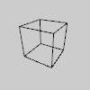

| Name | beginCamera |
|---|---|
| Examples |

settings <- function() {
size(100, 100, P3D)
}
draw <- function() {
noFill()
beginCamera()
camera()
rotateX(-PI/6)
endCamera()
translate(50, 50, 0)
rotateY(PI/3)
box(45)
}
|
| Description |
The beginCamera() and endCamera() functions enable advanced customization of the camera space. The functions are useful if you want to more control over camera movement, however for most users, the camera() function will be sufficient. The camera functions will replace any transformations (such as rotate() or translate()) that occur before them in draw(), but they will not automatically replace the camera transform itself. For this reason, camera functions should be placed at the beginning of draw() (so that transformations happen afterwards), and the camera() function can be used after beginCamera() if you want to reset the camera before applying transformations. This function sets the matrix mode to the camera matrix so calls such as translate(), rotate(), applyMatrix() and resetMatrix() affect the camera. beginCamera() should always be used with a following endCamera() and pairs of beginCamera() and endCamera() cannot be nested. |
| Syntax | beginCamera() |
| Related |
camera endCamera applyMatrix resetMatrix translate scale |